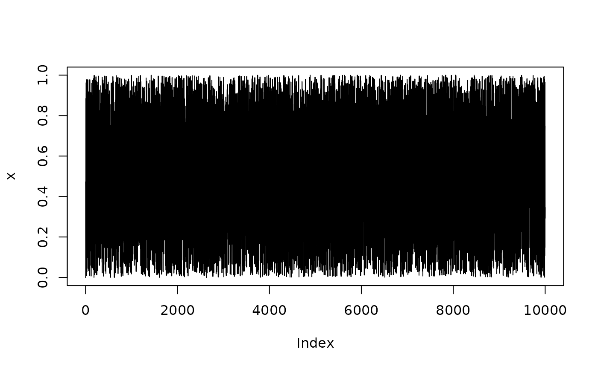
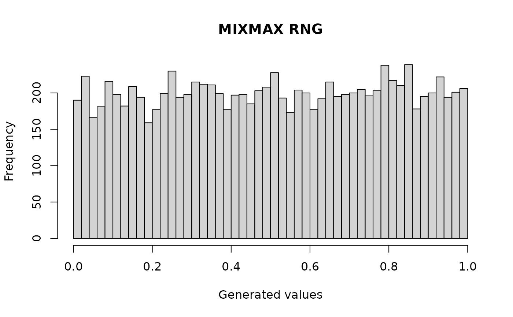

mixmax.RdGenerate pseudorandom numbers using a simple Rcpp implementation of the MIXMAX random number generator.
mixmax(
seed,
n,
N = 256L,
seed_method = "lcg",
vielbein_index = 1L,
burn_in = 0L,
burn_in_cycles = 0L,
start_after_seed = FALSE,
scaling = "mersenne",
raw = FALSE,
warn_small_N = TRUE
)Integer seed. For `"lcg"` and `"spbox"` seeding, `seed` must satisfy `0 < seed < 2^61 - 1`. When `seed_method = "vielbein"`, the seed is ignored.
Number of pseudorandom values to generate. Must be non-negative.
MIXMAX matrix size. Supported values are `3150`, `1260`, `1000`, `720`, `508`, `256`, `88`, `64`, `44`, `40`, `30`, `16`, and `10`. The default is `256`.
Seeding method. One of `"lcg"`, `"spbox"`, or `"vielbein"`. The default is `"lcg"`.
Basis-vector index used only when `seed_method = "vielbein"`. Must satisfy `1 <= vielbein_index <= N`.
Number of generated values to discard before returning output. Must be non-negative.
Number of full MIXMAX state-vector updates to discard before returning output. Must be non-negative.
Logical. If `TRUE`, advance the full MIXMAX state once immediately after seeding.
Scaling method for returned uniform values. One of `"mersenne"`, `"half_open"`, or `"open"`. `"mersenne"` returns `raw / (2^61 - 1)`. `"half_open"` returns `raw / 2^61`. `"open"` returns `(raw + 0.5) / 2^61`.
Logical. If `FALSE`, return scaled uniform values. If `TRUE`, return raw 61-bit integer values stored as doubles. Note that R doubles cannot exactly represent every 61-bit integer.
Logical. If `TRUE`, warn when `N < 88`.
A numeric vector of length `n`.
MIXMAX is a family of pseudorandom number generators based on matrix recurrences over the finite field with Mersenne modulus \(2^{61} - 1\). This function keeps the interface similar to other simple RNG functions: provide a seed, the number of values to generate, and optional controls.
The default call `mixmax(seed = 12345, n = 10000)` uses `N = 256`, LCG-style seeding, no burn-in, and Mersenne scaling.
This function is self-contained and does not use or modify R's global random number generator state.
x <- mixmax(seed = 12345, n = 10000)
plot(x, type = "l")

hist(
mixmax(seed = 12345, n = 10000),
breaks = 50,
main = "MIXMAX RNG",
xlab = "Generated values"
)

# Larger matrix size
x_big <- mixmax(seed = 12345, n = 10000, N = 3150)
# SPBOX seeding
x_spbox <- mixmax(seed = 12345, n = 10000, seed_method = "spbox")
# Burn-in
x_burn <- mixmax(seed = 12345, n = 10000, burn_in = 1000)
# Burn-in by full state cycles
x_cycles <- mixmax(seed = 12345, n = 10000, burn_in_cycles = 10)
# Different scaling choices
x1 <- mixmax(12345, 10000, scaling = "mersenne")
x2 <- mixmax(12345, 10000, scaling = "half_open")
x3 <- mixmax(12345, 10000, scaling = "open")
# Raw values as doubles
raw_values <- mixmax(12345, 10, raw = TRUE)